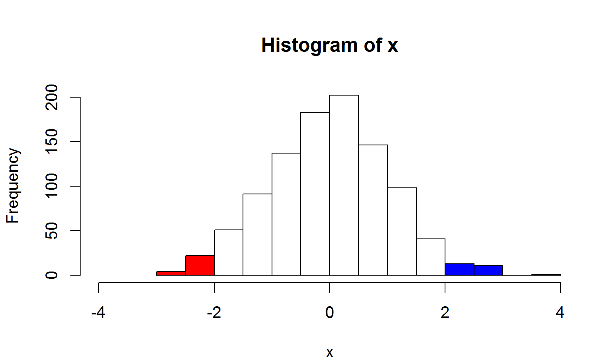
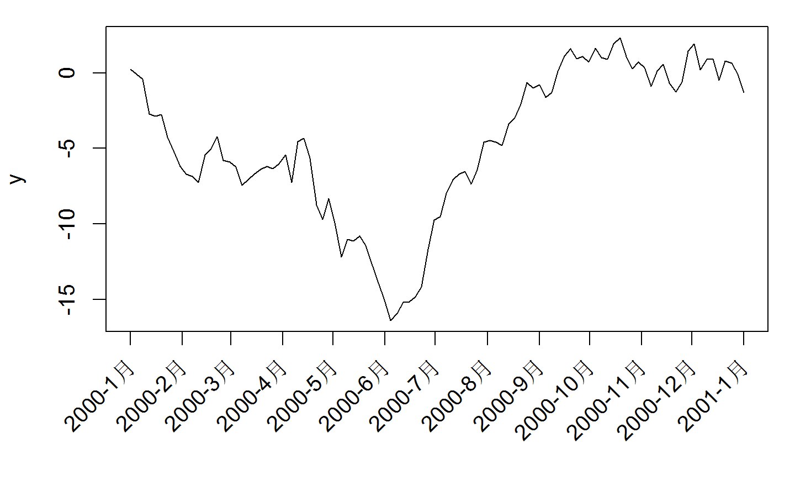
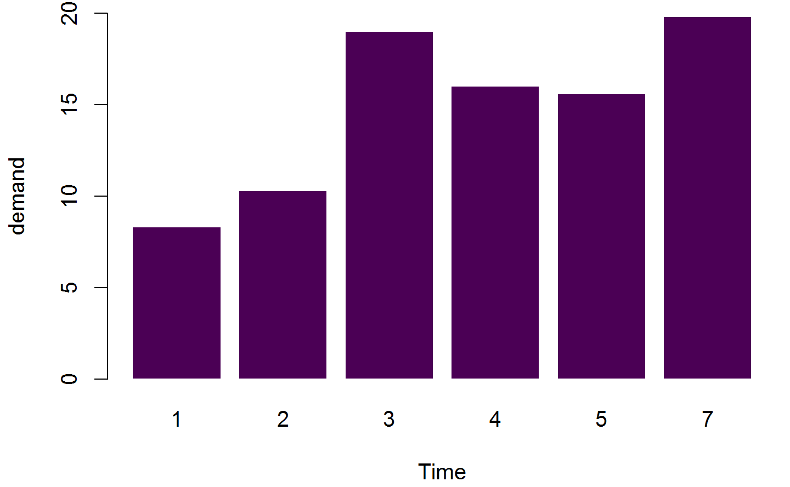
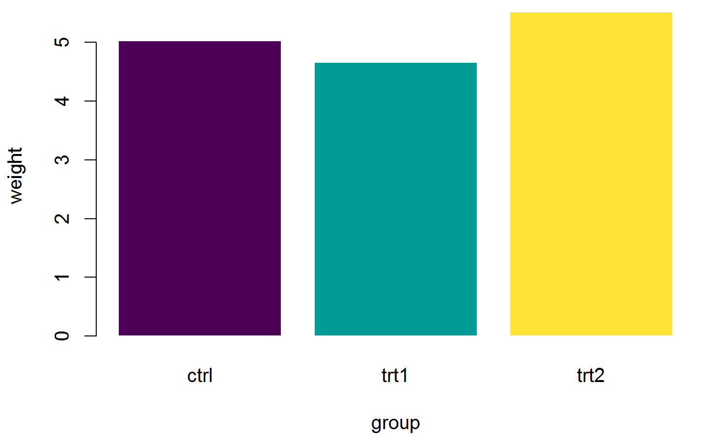
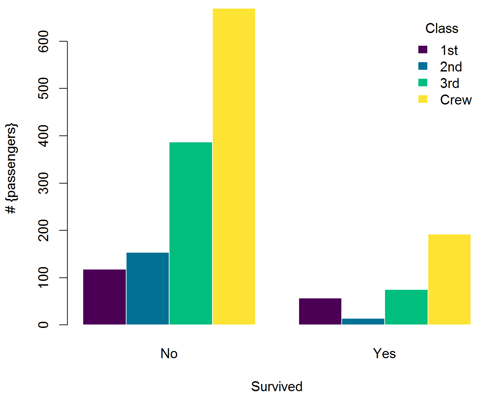
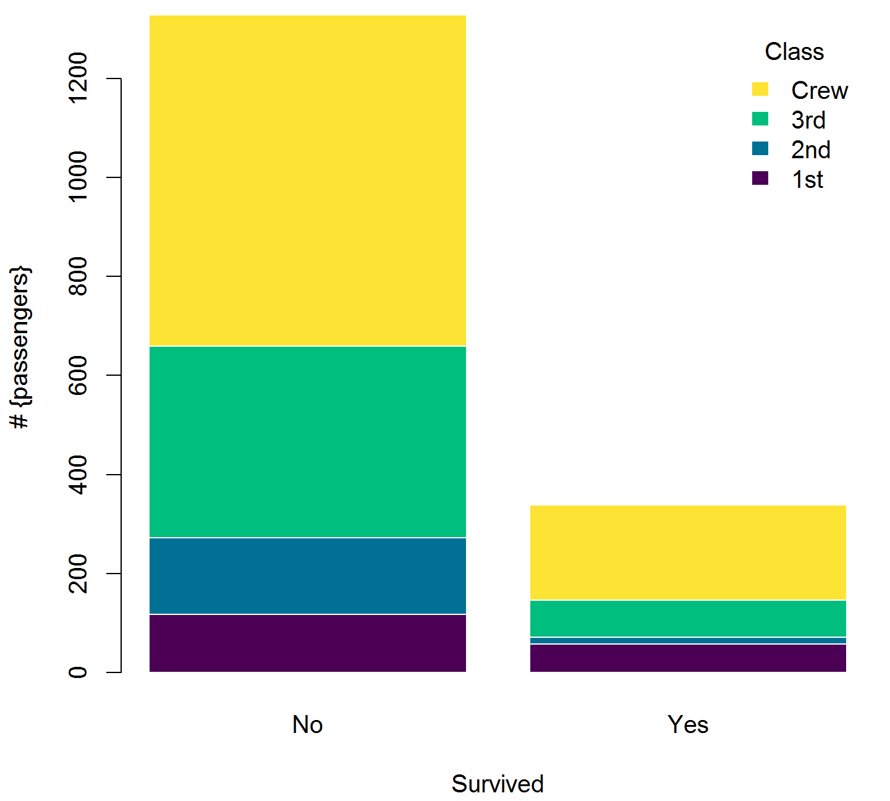
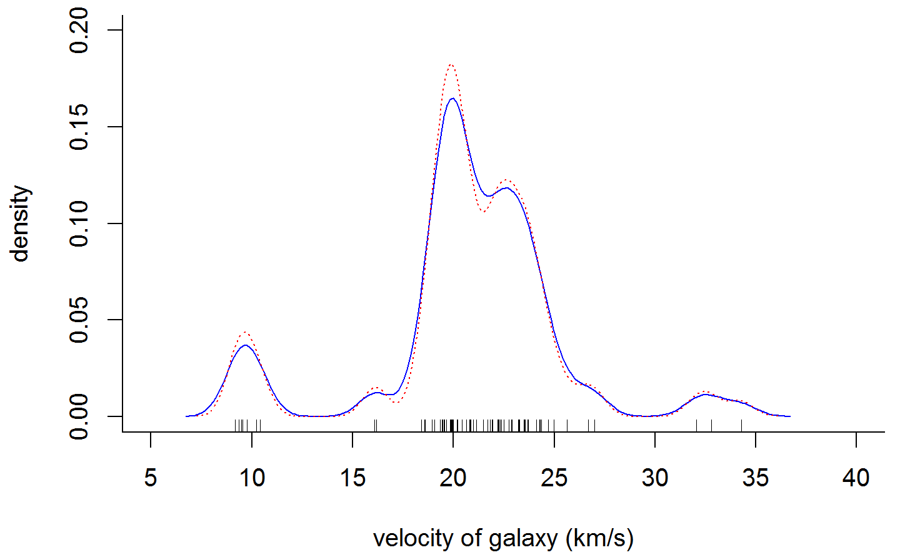
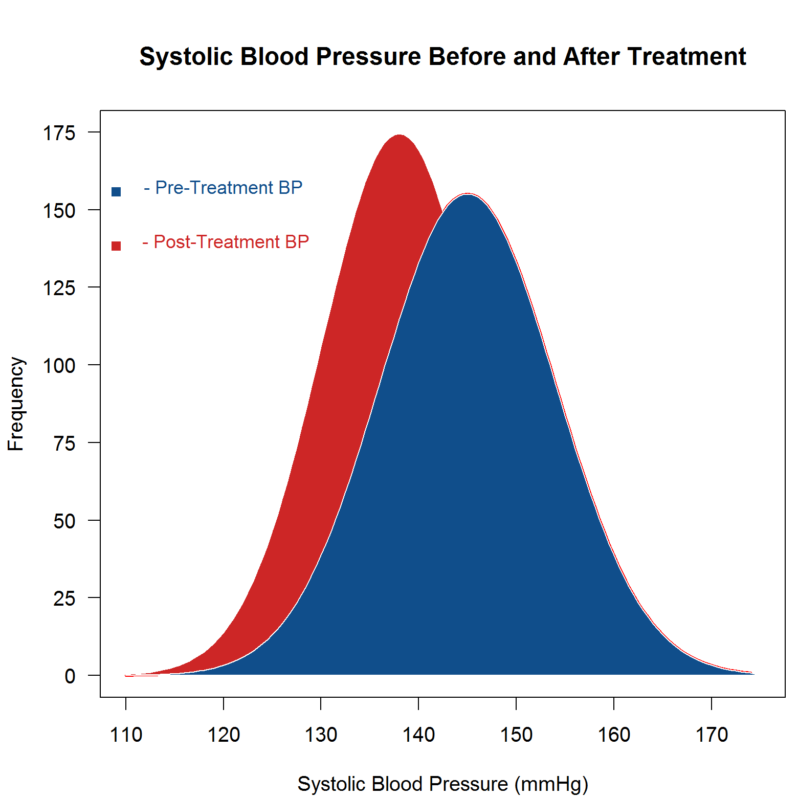
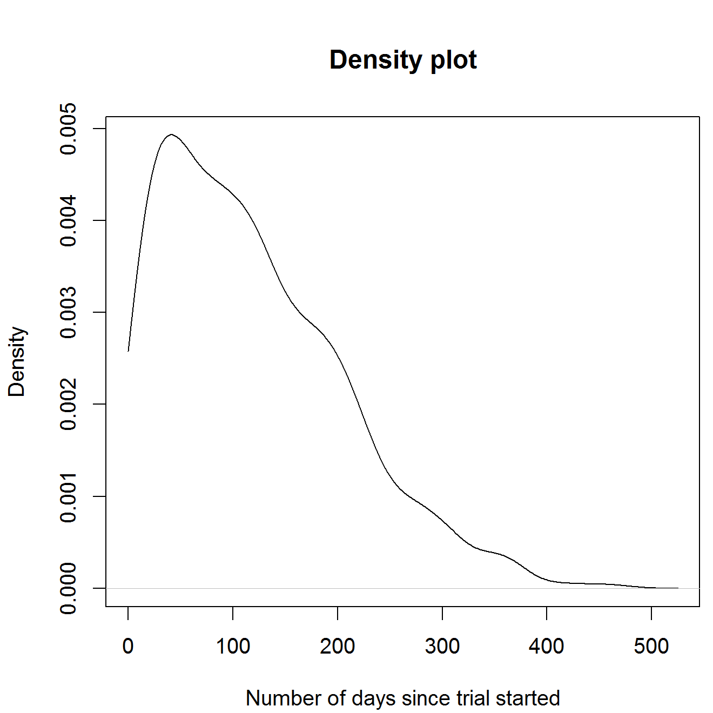

第 12 章 绘图素材库
数据可视化是一种重要的数据分析手段， R 提供了两套图形系统，分别是 graphics 包提供的基础绘图系统和 grid 包提供的栅格绘图系统，后者主要以两个 R 包为大家所熟知，一个是 lattice 包，另一个是 ggplot2 包。
Base 图形系统的扩展包 prettyB 和 gridGraphics
为了方便记忆函数 par 的各个参数，Paul Murrell 整理了一份 助记符，此外，LaTeX 宏包 geometry 对版面设置有很多专业的说明
12.1 基本要素
12.1.1 点线
点和线是最常见的画图元素，在 plot 函数中，分别用参数 pch 和 lty 来设定类型，点的大小、线的宽度分别用参数 cex 和 lwd 来指定，颜色由参数 col 设置。参数 type 不同的值设置如下，p 显示点，l 绘制线，b 同时绘制空心点，并用线连接，c 只有线，o 在线上绘制点，s 和 S 点线连接绘制阶梯图，h 绘制类似直方图一样的垂线，最后 n 表示什么也不画。
点 points 、线 grid 背景线 abline lines rug 刻度线（线段segments、箭头arrows）、
## -------- Showing all the extra & some char graphics symbols ---------
pchShow <-
function(extras = c("*", ".", "o", "O", "0", "+", "-", "|", "%", "#"),
cex = 2, ## good for both .Device=="postscript" and "x11"
col = "red3", bg = "gold", coltext = "brown", cextext = 1.2,
main = paste(
"plot symbols : points (... pch = *, cex =",
cex, ")"
)) {
nex <- length(extras)
np <- 26 + nex
ipch <- 0:(np - 1)
k <- floor(sqrt(np))
dd <- c(-1, 1) / 2
rx <- dd + range(ix <- ipch %/% k)
ry <- dd + range(iy <- 3 + (k - 1) - ipch %% k)
pch <- as.list(ipch) # list with integers & strings
if (nex > 0) pch[26 + 1:nex] <- as.list(extras)
plot(rx, ry, type = "n", axes = FALSE, xlab = "", ylab = "", main = main)
abline(v = ix, h = iy, col = "lightgray", lty = "dotted")
for (i in 1:np) {
pc <- pch[[i]]
## 'col' symbols with a 'bg'-colored interior (where available) :
points(ix[i], iy[i], pch = pc, col = col, bg = bg, cex = cex)
if (cextext > 0) {
text(ix[i] - 0.3, iy[i], pc, col = coltext, cex = cextext)
}
}
}
pchShow()图 12.1: 不同的 pch 参数值
## ------------ test code for various pch specifications -------------
# Try this in various font families (including Hershey)
# and locales. Use sign = -1 asserts we want Latin-1.
# Standard cases in a MBCS locale will not plot the top half.
TestChars <- function(sign = 1, font = 1, ...) {
MB <- l10n_info()$MBCS
r <- if (font == 5) {
sign <- 1
c(32:126, 160:254)
} else if (MB) 32:126 else 32:255
if (sign == -1) r <- c(32:126, 160:255)
par(pty = "s")
plot(c(-1, 16), c(-1, 16),
type = "n", xlab = "", ylab = "",
xaxs = "i", yaxs = "i",
main = sprintf("sign = %d, font = %d", sign, font)
)
grid(17, 17, lty = 1)
mtext(paste("MBCS:", MB))
for (i in r) try(points(i %% 16, i %/% 16, pch = sign * i, font = font, ...))
}
TestChars()
try(TestChars(sign = -1))
TestChars(font = 5) # Euro might be at 160 (0+10*16).
# macOS has apple at 240 (0+15*16).
try(TestChars(-1, font = 2)) # bold图 12.2: pch 支持的字符
x <- 0:12
y <- sin(pi / 5 * x)
par(mfrow = c(3, 3), mar = .1 + c(2, 2, 3, 1))
for (tp in c("p", "l", "b", "c", "o", "h", "s", "S", "n")) {
plot(y ~ x, type = tp, main = paste0("plot(*, type = \"", tp, "\")"))
if (tp == "S") {
lines(x, y, type = "s", col = "red", lty = 2)
mtext("lines(*, type = \"s\", ...)", col = "red", cex = 0.8)
}
}图 12.3: 不同的 type 参数值
颜色 col 连续型和离散型
线帽/端和字体的样式
# 合并为一个图 三条粗横线 横线上三种字形
plot(c(1, 20), c(1, 20), type = "n", ann = FALSE)
lines(x = c(5, 15), y = c(5, 5), lwd = 15, lend = "round")
text(10, 5, "Hello, Helvetica", cex = 1.5, family = "sans", pos = 1, offset = 1.5)
text(5, 5, "sans", cex = 1.5, family = "sans", pos = 2, offset = .5)
text(15, 5, "lend = round", pos = 4, offset = .5)
lines(x = c(5, 15), y = c(10, 10), lwd = 15, lend = "butt")
text(10, 10, "Hello, Helvetica", cex = 1.5, family = "mono", pos = 1, offset = 1.5)
text(5, 10, "mono", cex = 1.5, family = "mono", pos = 2, offset = .5)
text(15, 10, "lend = butt", pos = 4, offset = .5)
lines(x = c(5, 15), y = c(15, 15), lwd = 15, lend = "square")
text(10, 15, "Hello, Helvetica", cex = 1.5, family = "serif", pos = 1, offset = 1.5)
text(5, 15, "serif", cex = 1.5, family = "serif", pos = 2, offset = .5)
text(15, 15, "lend = square", pos = 4, offset = .5)图 12.4: 不同的线端样式
lend：线端的样式，可用一个整数或字符串指定：
- 0 或 “round” 圆形（默认）
- 1 或 “butt” 对接形
- 2 或 “square” 方形
12.1.2 区域
矩形，多边形，曲线交汇出来的区域 面（矩形rect，多边形polygon）、路径 polypath 面/多边形 rect 颜色填充
# From the manual
ch.col <- c(
"rainbow(n, start=.7, end=.1)",
"heat.colors(n)",
"terrain.colors(n)",
"topo.colors(n)",
"cm.colors(n)"
) # 选择颜色
n <- 16
nt <- length(ch.col)
i <- 1:n
j <- n / nt
d <- j / 6
dy <- 2 * d
plot(i, i + d,
type = "n",
yaxt = "n",
ylab = "",
xlab = "",
main = paste("color palettes; n=", n)
)
for (k in 1:nt) {
rect(i - .5, (k - 1) * j + dy, i + .4, k * j,
col = eval(parse(text = ch.col[k]))
) # 咬人的函数/字符串解析为/转函数
text(2 * j, k * j + dy / 4, ch.col[k])
}图 12.5: rect 函数画长方形
clip(x1, x2, y1, y2) 在用户坐标中设置剪切区域
x <- rnorm(1000)
hist(x, xlim = c(-4,4))
usr <- par("usr")
clip(usr[1], -2, usr[3], usr[4])
hist(x, col = 'red', add = TRUE)
clip(2, usr[2], usr[3], usr[4])
hist(x, col = 'blue', add = TRUE)
do.call("clip", as.list(usr)) # reset to plot region
my.col <- function(f, g, xmin, xmax, col, N = 200,
xlab = "", ylab = "", main = "") {
x <- seq(xmin, xmax, length = N)
fx <- f(x)
gx <- g(x)
plot(0, 0,
type = "n",
xlim = c(xmin, xmax),
ylim = c(min(fx, gx), max(fx, gx)),
xlab = xlab, ylab = ylab, main = main
)
polygon(c(x, rev(x)), c(fx, rev(gx)),
col = "#EA4335", border = 0
)
lines(x, fx, lwd = 3, col = "#34A853")
lines(x, gx, lwd = 3, col = "#4285f4")
}
my.col(function(x) x^2, function(x) x^2 + 10 * sin(x),
-6, 6,
main = "The \"polygon\" function"
)图 12.6: 区域重叠 polygon 函数
各种符号 12.7
plot(0, 0,
xlim = c(1, 5), ylim = c(-.5, 4),
axes = F,
xlab = "", ylab = ""
)
for (i in 0:4) {
for (j in 1:5) {
n <- 5 * i + j
points(j, i,
pch = n,
cex = 3
)
text(j, i - .3, as.character(n))
}
}图 12.7: cex 支持的符号
点、线、多边形和圆聚集在图 12.8 中
# https://jeroen.github.io/uros2018/#23
plot.new()
plot.window(xlim = c(0, 100), ylim = c(0, 100))
polygon(c(10, 40, 80), c(10, 80, 40), col = "hotpink")
text(40, 90, labels = "My drawing", col = "navyblue", cex = 3)
symbols(c(70, 80, 90), c(20, 50, 80),
circles = c(10, 20, 10),
bg = c("#4285f4", "#EA4335", "red"), add = TRUE, lty = "dashed"
)图 12.8: 多边形和符号元素
在介绍各种统计图形之前，先介绍几个绘图函数 plot 和 text 还有 par 参数设置， 作为最简单的开始，尽量依次介绍其中的每个参数的含义并附上图形对比。
y <- x <- 1:4
plot(x, y, ann = F, col = "blue", pch = 16)
text(x, y,
labels = c("1st", "2nd", "3rd", "4th"),
col = "red", pos = c(3, 4, 4, 1), offset = 0.6
)
ahat <- "sigma"
# title(substitute(hat(a) == ahat, list(ahat = ahat)))
title(bquote(hat(a) == .(ahat)))图 12.9: pos 位置参数
其中 labels， pos 都是向量化的参数
12.1.3 参考线
矩形网格线是用做背景参考线的，常常是淡灰色的细密虚线，plot 函数的 panel.first 参数和 grid 函数常用来画这种参考线
# modified from https://yihui.name/cn/2018/02/cohen-s-d/
n = 30 # 样本量（只是一个例子）
x = seq(0, 12, 0.01)
par(mar = c(4, 4, 0.2, 0.1))
plot(x/sqrt(n), 2 * (1 - pt(x, n - 1)),
xlab = expression(d = x/sqrt(n)),
type = "l", panel.first = grid())
abline(v = c(0.01, 0.2, 0.5, 0.8, 1.2, 2), lty = 2)图 12.10: 添加背景参考线
12.1.4 坐标轴
# 双Y轴
N <- 200
x <- seq(-4, 4, length = N)
y1 <- sin(x)
y2 <- cos(x)
op <- par(mar = c(5, 4, 4, 4)) # Add some space in the right margin
# The default is c(5,4,4,2) + .1
xlim <- range(x)
ylim <- c(-1.1, 1.1)
plot(x, y1,
col = "blue", type = "l",
xlim = xlim, ylim = ylim,
axes = F, xlab = "", ylab = "", main = "Title"
)
axis(1)
axis(2, col = "blue")
par(new = TRUE)
plot(x, y2,
col = "red", type = "l",
xlim = xlim, ylim = ylim,
axes = F, xlab = "", ylab = "", main = ""
)
axis(4, col = "red")
mtext("First Y axis", 2, line = 2, col = "blue", cex = 1.2)
mtext("Second Y axis", 4, line = 2, col = "red", cex = 1.2)
# 1,2,3,4 分别代表下左上右四个位置图 12.11: 两个 Y 轴
调整坐标轴标签的距离
## Changing default gap between labels:
plot(c(0,100),c(0,50), type="n", axes=FALSE, ann=FALSE)
title(quote("axis(1, .., gap.axis = f)," ~~ f >= 0))
axis(2, at = 5*(0:10), las = 1, gap.axis = 1/4)
gaps <- c(4, 2, 1, 1/2, 1/4, 0.1, 0)
chG <- paste0(ifelse(gaps == 1, "default: ", ""),
"gap.axis=", formatC(gaps))
jj <- seq_along(gaps)
linG <- -2.5*(jj-1)
for(j in jj) {
isD <- gaps[j] == 1 # is default
axis (1, at=5*(0:20), gap.axis = gaps[j], padj=-1, line = linG[j],
col.axis = if(isD) "forest green" else 1, font.axis= 1+isD)
}
mtext(chG, side=1, padj=-1, line = linG -1/2, cex=3/4,
col = ifelse(gaps == 1, "forest green", "blue3"))
## now shrink the window (in x- and y-direction) and observe the axis labels drawn图 12.12: gap.axis用法
旋转坐标轴标签
# Rotated axis labels in R plots
# https://menugget.blogspot.com/2014/08/rotated-axis-labels-in-r-plots.html
# Example data
tmin <- as.Date("2000-01-01")
tmax <- as.Date("2001-01-01")
tlab <- seq(tmin, tmax, by = "month")
lab <- format(tlab, format = "%Y-%b")
set.seed(111)
x <- seq(tmin, tmax, length.out = 100)
y <- cumsum(rnorm(100))
# Plot
# png("plot_w_rotated_axis_labels.png", height = 3,
# width = 6, units = "in", res = 300)
op <- par(mar = c(6, 4, 1, 1))
plot(x, y, t = "l", xaxt = "n", xlab = "")
axis(1, at = tlab, labels = FALSE)
text(
x = tlab, y = par()$usr[3] - 0.1 * (par()$usr[4] - par()$usr[3]),
labels = lab, srt = 45, adj = 1, xpd = TRUE
)
par(op)
# dev.off()
旋转坐标抽标签的例子来自手册《R FAQ》的第7章第27个问题 (Hornik 2018)，在基础图形中，旋转坐标轴标签需要 text() 而不是 mtext()，因为后者不支持par("srt")
## Increase bottom margin to make room for rotated labels
par(mar = c(5, 4, .5, 2) + 0.1)
## Create plot with no x axis and no x axis label
plot(1:8, xaxt = "n", xlab = "")
## Set up x axis with tick marks alone
axis(1, labels = FALSE)
## Create some text labels
labels <- paste("Label", 1:8, sep = " ")
## Plot x axis labels at default tick marks
text(1:8, par("usr")[3] - 0.5,
srt = 45, adj = 1,
labels = labels, xpd = TRUE
)
## Plot x axis label at line 6 (of 7)
mtext(side = 1, text = "X Axis Label", line = 4)图 12.13: 旋转坐标轴标签
srt = 45 表示文本旋转角度， xpd = TRUE 允许文本越出绘图区域，adj = 1 to place the right end of text at the tick marks；You can adjust the value of the 0.5 offset as required to move the axis labels up or down relative to the x axis. 详细地参考 (Murrell 2003)
12.1.5 标题
添加多个标题
N <- 200
x <- runif(N, -4, 4)
y <- sin(x) + .5 * rnorm(N)
plot(x, y, xlab = "", ylab = "", main = "")
mtext("Subtitle", 3, line = .8)
mtext("Title", 3, line = 2, cex = 1.5)
mtext("X axis", 1, line = 2.5, cex = 1.5)
mtext("X axis subtitle", 1, line = 3.7)图 12.14: 图标题/子标题 x轴标题/子标题
12.1.6 注释
数学符号注释，图12.15 自定义坐标轴 (Murrell and Ihaka 2000)。
# 自定义坐标轴
plot(c(1, 1e6), c(-pi, pi),
type = "n",
axes = FALSE, ann = FALSE, log = "x"
)
axis(1,
at = c(1, 1e2, 1e4, 1e6),
labels = expression(1, 10^2, 10^4, 10^6)
)
axis(2,
at = c(-pi, -pi / 2, 0, pi / 2, pi),
labels = expression(-pi, -pi / 2, 0, pi / 2, pi)
)
text(1e3, 0, expression(italic("Customized Axes")))
box()图 12.15: 创建自定义的坐标轴和刻度标签
在标题中添加数学公式
x <- seq(-5, 5, length = 200)
y <- sqrt(1 + x^2)
plot(y ~ x,
type = "l",
ylab = expression(sqrt(1 + x^2))
)
title(main = expression(
"graph of the function f"(x) == sqrt(1 + x^2)
))图 12.16: 标题含有数学公式
修改参数使用 substitute 函数批量生成
x <- seq(-5, 5, length = 200)
for (i in 1:4) { # 画四个图
y <- sqrt(i + x^2)
plot(y ~ x,
type = "l",
ylim = c(0, 6),
ylab = substitute(
expression(sqrt(i + x^2)),
list(i = i)
)
)
title(main = substitute(
"graph of the function f"(x) == sqrt(i + x^2),
list(i = i)
))
}图 12.17: 批量生成函数图形
基础绘图函数，如 plot 标签 xlab 支持 Unicode 代码表示的希腊字母，常用字母表备查，公式环境下，也可以用在绘图中
| 希腊字母 | LaTeX 代码 | Unicode 代码 | 希腊字母 | LaTeX 代码 | Unicode 代码 |
|---|---|---|---|---|---|
| \(\alpha\) | \alpha |
\u03B1 |
\(\mu\) | \mu |
\u03BC |
| \(\beta\) | \beta |
\u03B2 |
\(\nu\) | \nu |
\u03BD |
| \(\gamma\) | \gamma |
\u03B3 |
\(\xi\) | \xi |
\u03BE |
| \(\delta\) | \delta |
\u03B4 |
\(\varphi\) | \varphi |
\u03C6 |
| \(\epsilon\) | \epsilon |
\u03B5 |
\(\pi\) | \pi |
\u03C0 |
| \(\zeta\) | \zeta |
\u03B6 |
\(\rho\) | \rho |
\u03C1 |
| \(\eta\) | \eta |
\u03B7 |
\(\upsilon\) | \upsilon |
\u03C5 |
| \(\theta\) | \theta |
\u03B8 |
\(\phi\) | \phi |
\u03C6 |
| \(\iota\) | \iota |
\u03B9 |
\(\chi\) | \chi |
\u03C7 |
| \(\kappa\) | \kappa |
\u03BA |
\(\psi\) | \psi |
\u03C8 |
| \(\lambda\) | \lambda |
\u03BB |
\(\omega\) | \omega |
\u03C9 |
| \(\sigma\) | \sigma |
\u03C3 |
\(\tau\) | \tau |
\u03C4 |
| 上标数字 | LaTeX 代码 | Unicode 代码 | 下标数字 | LaTeX 代码 | Unicode 代码 |
|---|---|---|---|---|---|
| \({}^0\) | {}^0 |
\u2070 |
\({}_0\) | {}_0 |
\u2080 |
| \({}^1\) | {}^1 |
\u00B9 |
\({}_1\) | {}_1 |
\u2081 |
| \({}^2\) | {}^2 |
\u00B2 |
\({}_2\) | {}_2 |
\u2082 |
| \({}^3\) | {}^3 |
\u00B2 |
\({}_3\) | {}_3 |
\u2083 |
| \({}^4\) | {}^4 |
\u2074 |
\({}_4\) | {}_4 |
\u2084 |
| \({}^5\) | {}^5 |
\u2075 |
\({}_5\) | {}_5 |
\u2085 |
| \({}^6\) | {}^6 |
\u2076 |
\({}_6\) | {}_6 |
\u2086 |
| \({}^7\) | {}^7 |
\u2077 |
\({}_7\) | {}_7 |
\u2087 |
| \({}^8\) | {}^8 |
\u2078 |
\({}_8\) | {}_8 |
\u2088 |
| \({}^9\) | {}^9 |
\u2079 |
\({}_9\) | {}_9 |
\u2089 |
| \({}^n\) | {}^n |
\u207F |
\({}_n\) | {}_n |
- |
其它字母，请查看 Unicode 字母表
12.1.7 图例
x <- seq(-6, 6, length = 200)
y <- sin(x)
z <- cos(x)
plot(y ~ x,
type = "l", lwd = 3,
ylab = "", xlab = "angle", main = "Trigonometric functions"
)
abline(h = 0, lty = 3)
abline(v = 0, lty = 3)
lines(z ~ x, type = "l", lwd = 3, col = "red")
legend(-6, -1,
yjust = 0,
c("Sine", "Cosine"),
lwd = 3, lty = 1, col = c(par("fg"), "red")
)图 12.18: 三角函数添加图例
xmin <- par("usr")[1]
xmax <- par("usr")[2]
ymin <- par("usr")[3]
ymax <- par("usr")[4]
plot(y ~ x,
type = "l", lwd = 3,
ylab = "", xlab = "angle", main = "Trigonometric functions"
)
abline(h = 0, lty = 3)
abline(v = 0, lty = 3)
lines(z ~ x, type = "l", lwd = 3, col = "red")
legend("bottomleft",
c("Sine", "Cosine"),
lwd = 3, lty = 1, col = c(par("fg"), "red")
)
图 12.19: 设置图例的位置
plot(y ~ x,
type = "l", lwd = 3,
ylab = "", xlab = "angle", main = "Trigonometric functions"
)
abline(h = 0, lty = 3)
abline(v = 0, lty = 3)
lines(z ~ x, type = "l", lwd = 3, col = "red")
legend("bottomleft",
c("Sine", "Cosine"),
inset = c(.03, .03),
lwd = 3, lty = 1, col = c(par("fg"), "red")
)图 12.20: insert 函数微调图例位置
op <- par(no.readonly = TRUE)
plot(y ~ x,
type = "l", lwd = 3,
ylab = "", xlab = "angle", main = "Trigonometric functions"
)
abline(h = 0, lty = 3)
abline(v = 0, lty = 3)
lines(z ~ x, type = "l", lwd = 3, col = "red")
par(xpd = TRUE) # Do not clip to the drawing area 关键一行/允许出界
lambda <- .025
legend(par("usr")[1],
(1 + lambda) * par("usr")[4] - lambda * par("usr")[3],
c("Sine", "Cosine"),
xjust = 0, yjust = 0,
lwd = 3, lty = 1, col = c(par("fg"), "red")
)
par(op)图 12.21: 将图例放在绘图区域外面
Hmisc 包的 labcurve 函数可以在曲线上放置名称，而不是遥远的图例上
12.1.8 边空
N <- 200
x <- runif(N, -4, 4)
y <- sin(x) + .5 * rnorm(N)
plot(x, y,
xlab = "", ylab = "",
main = paste(
"The \"mtext\" function",
paste(rep(" ", 60), collapse = "")
)
)
mtext("Line 0", 3, line = 0)
mtext("Line 1", 3, line = 1)
mtext("Line 2", 3, line = 2)
mtext("Line 3", 3, line = 3)图 12.22: 外边空在图的边缘添加文字
par
# 多图排列/分屏 page 47
# 最常用的是 par mfrow mfcol分别按行/列放置图形
op <- par(
mfrow = c(2, 2),
oma = c(0, 0, 4, 0) # Outer margins
)
for (i in 1:4)
plot(runif(20), runif(20),
main = paste("random plot (", i, ")", sep = "")
)
par(op)
mtext("Four plots, without enough room for this title",
side = 3, font = 2, cex = 1.5, col = "red"
) # 总/大标题放不下图 12.23: 多图排列共享一个大标题
par 的 oma 用来设置外边空的大小
op <- par(
mfrow = c(2, 2),
oma = c(0, 0, 3, 0) # Outer margins
)
for (i in 1:4)
plot(runif(20), runif(20),
main = paste("random plot (", i, ")", sep = "")
)
par(op)
mtext("Four plots, with some room for this title",
side = 3, line = 1.5, font = 1, cex = 1.5, col = "red"
)图 12.24: 设置外边空放置大标题
op <- par(
mfrow = c(2, 2),
oma = c(0, 0, 3, 0),
mar = c(3, 3, 4, 1) + .1 # Margins
)
for (i in 1:4)
plot(runif(20), runif(20),
xlab = "", ylab = "",
main = paste("random plot (", i, ")", sep = "")
)
par(op)
mtext("Title",
side = 3, line = 1.5, font = 2, cex = 2, col = "red"
)图 12.25: 设置每个子图的边空 mar
12.1.9 图层
覆盖图形 add = T or par(new=TRUE)
plot(runif(5), runif(5),
xlim = c(0, 1), ylim = c(0, 1)
)
points(runif(5), runif(5),
col = "#EA4335", pch = 16, cex = 3
)
lines(runif(5), runif(5), col = "red")
segments(runif(5), runif(5), runif(5), runif(5),
col = "blue"
)
title(main = "Overlaying points, segments, lines...")图 12.26: 添加图层
12.1.10 布局
layout 函数布局， 绘制复杂组合图形
op <- par(oma = c(0, 0, 3, 0))
layout(matrix(c(
1, 1, 1,
2, 3, 4,
2, 3, 4
), nr = 3, byrow = TRUE))
hist(rnorm(n), col = "light blue")
hist(rnorm(n), col = "light blue")
hist(rnorm(n), col = "light blue")
hist(rnorm(n), col = "light blue")
mtext("The \"layout\" function",
side = 3, outer = TRUE,
font = 2, cex = 1.2
)图 12.27: 更加复杂的组合图形
12.1.11 组合
par 之 fig 参数很神奇，使得多个图可以叠加在一起，它接受一个数值向量c(x1, x2, y1, y2) ，是图形设备显示区域中的绘图区域的(NDC, normalized device coordinates)坐标。
plot(1:12,
type = "b", main = "'fg' : axes, ticks and box in gray",
fg = gray(0.7), bty = "7", sub = R.version.string
)
par(fig = c(1, 6, 5, 10) / 10, new = T)
plot(6:10,
type = "b", main = "",
fg = gray(0.7), bty = "7", xlab = R.version.string
)图 12.28: 多图叠加
fig 参数控制图形的位置，用来绘制组合图形
n <- 1000
x <- rt(n, df = 10)
hist(x,
col = "light blue",
probability = "TRUE", main = "",
ylim = c(0, 1.2 * max(density(x)$y))
)
lines(density(x),
col = "red",
lwd = 3
)
op <- par(
fig = c(.02, .4, .5, .98),
new = TRUE
)
qqnorm(x,
xlab = "", ylab = "", main = "",
axes = FALSE
)
qqline(x, col = "red", lwd = 2)
box(lwd = 2)
par(op)图 12.29: 组合图形
12.1.12 分屏
split.screen 分屏组合
random.plot <- function() {
N <- 200
f <- sample(
list(
rnorm,
function(x) {
rt(x, df = 2)
},
rlnorm,
runif
),
1
) [[1]]
x <- f(N)
hist(x, col = "lightblue", main = "", xlab = "", ylab = "", axes = F)
axis(1)
}
op <- par(bg = "white", mar = c(2.5, 2, 1, 2))
split.screen(c(2, 1))
#> [1] 1 2
split.screen(c(1, 3), screen = 2)
#> [1] 3 4 5
screen(1)
random.plot()
# screen(2); random.plot() # Screen 2 was split into three screens: 3, 4, 5
screen(3)
random.plot()
screen(4)
random.plot()
screen(5)
random.plot()
close.screen(all = TRUE)
par(op)图 12.30: 分屏
12.1.13 交互
辅助绘图 identify locator
12.2 统计图形
按图的类型划分，最后在小结部分给出各图适用的数据类型
根据数据类型划分： 对于一元数据，可用什么图来描述；多元数据呢，连续数据和离散数据（分类数据）
先找一个不重不漏的划分，指导原则是根据数据类型选择图，根据探索到的数据中的规律，选择图
其它 assocplot fourfoldplot sunflowerplot
12.2.1 条形图
简单条形图
data(diamonds, package = "ggplot2") # 加载数据
par(mar = c(2, 5, 1, 1))
barCenters <- barplot(table(diamonds$cut),
col = "lightblue", axes = FALSE,
axisnames = FALSE, horiz = TRUE, border = "white"
)
text(
y = barCenters, x = par("usr")[3],
adj = 1, labels = names(table(diamonds$cut)), xpd = TRUE
)
axis(1,
labels = seq(0, 25000, by = 5000), at = seq(0, 25000, by = 5000),
las = 1, col = "gray"
)
grid()图 12.31: 条形图
简单柱形图
set.seed(123456)
barPois <- table(stats::rpois(1000, lambda = 5))
plot(barPois, col = "lightblue", type = "h", lwd = 10, main = "")
box(col = "gray")图 12.32: 柱形图
复合条形图
par(mar = c(4.1,2.1,0.5,4.5))
barplot(VADeaths, border = "white", horiz = FALSE, col = hcl.colors(5),
legend.text = rownames(VADeaths), xpd = TRUE, beside = TRUE,
cex.names = 0.9,
args.legend = list(x = "right",border = "white", title = "Age",
box.col = NA, horiz = FALSE, inset = c(-.2, 0),
xpd = TRUE),
panel.first = grid(nx = 0, ny=7)) 图 12.33: 复合条形图
堆积条形图
par(mar = c(4.1,2.1,0.5,4.5))
barplot(VADeaths, border = "white", horiz = FALSE, col = hcl.colors(5),
legend.text = rownames(VADeaths), xpd = TRUE, beside = FALSE,
cex.names = 0.9,
args.legend = list(x = "right",border = "white", title = "Age",
box.col = NA, horiz = FALSE, inset = c(-.2, 0),
xpd = TRUE),
panel.first = grid(nx = 0, ny=4))图 12.34: 堆积条形图
- 堆积条形图 spineplot
简单条形图
barplot(data = BOD, demand ~ Time, ylim = c(0, 20),
border = "white", horiz = FALSE, col = hcl.colors(1))
pg_mean = aggregate(weight ~ group, data = PlantGrowth, mean)
barplot(data = pg_mean, weight ~ group,
border = "white", horiz = FALSE, col = hcl.colors(3))
Titanic 数据集是 table 数据类型
简单条形图
复合条形图
barplot(Freq ~ Class + Survived, data = Titanic,
subset = Age == "Adult" & Sex == "Male",
beside = TRUE,
border = "white", horiz = FALSE, col = hcl.colors(4),
args.legend = list(border = "white", title = "Class",
box.col = NA, horiz = FALSE,
xpd = TRUE),
ylab = "# {passengers}", legend = TRUE)
堆积条形图
barplot(Freq ~ Class + Survived, data = Titanic,
subset = Age == "Adult" & Sex == "Male",
border = "white", horiz = FALSE, col = hcl.colors(4),
args.legend = list(border = "white", title = "Class",
box.col = NA, horiz = FALSE,
xpd = TRUE),
ylab = "# {passengers}", legend = TRUE)
12.2.2 直方图
set.seed(1234)
n <- 2^24
x <- runif(n, 0, 1)
delta <- 0.01
len <- diff(c(0, which(x < delta), n + 1)) - 1
ylim <- seq(0, 1800, by = 300)
xlim <- seq(0, 100, by = 20)
p <- hist(len[len < 101], breaks = -1:100 + 0.5, plot = FALSE)
plot(p, ann = FALSE, axes = FALSE, col = "lightblue", border = "white", main = "")
axis(1, labels = xlim, at = xlim, las = 1) # x 轴
axis(2, labels = ylim, at = ylim, las = 0) # y 轴
box(col = "gray")图 12.35: 直方图
with(data = faithful, {
hist(eruptions, seq(1.6, 5.2, 0.2), prob = TRUE,
main = "", col = "lightblue", border = "white")
lines(density(eruptions, bw = 0.1), col = "#EA4335")
rug(eruptions, col = "#EA4335") # 添加数据点
})
图 12.36: 老忠实泉间歇性喷水的时间间隔分布
hist(longley$Unemployed,
probability = TRUE,
col = "light blue", main = ""
)
# 添加密度估计
lines(density(longley$Unemployed),
col = "red",
lwd = 3
)图 12.37: 概率密度分布
直方图有很多花样的，添加阴影线，angle 控制倾斜的角度
# hist(longley$Unemployed, density = 1, angle = 45)
# hist(longley$Unemployed, density = 3, angle = 15)
# hist(longley$Unemployed, density = 1, angle = 15)
hist(longley$Unemployed, density = 3, angle = 45, main = "")图 12.38: density 数值越大阴影线越密
12.2.3 密度图
library(MASS)
data(galaxies)
galaxies <- galaxies / 1000
# Bandwidth Selection by Pilot Estimation of Derivatives
c(width.SJ(galaxies, method = "dpi"), width.SJ(galaxies))
#> [1] 3.26 2.57
plot(
x = c(5, 40), y = c(0, 0.2), type = "n", bty = "l",
xlab = "velocity of galaxy (km/s)", ylab = "density"
)
rug(galaxies)
lines(density(galaxies, width = 3.25, n = 200), col = "blue", lty = 1)
lines(density(galaxies, width = 2.56, n = 200), col = "red", lty = 3)
x <- seq(from = 110, to = 174, by = 0.5)
y1 <- dnorm(x, mean = 145, sd = 9)
y2 <- dnorm(x, mean = 138, sd = 8)
plot(x, y1,
type = "l", lwd = 2, col = "red",
main = "Systolic Blood Pressure Before and After Treatment",
xlab = "Systolic Blood Pressure (mmHg)",
ylab = "Frequency", yaxt = "n",
xlim = c(110, 175), ylim = c(0, 0.05)
)
lines(x, y2)
polygon(c(110, x, 175), c(0, y2, 0),
col = "firebrick3",
border = "white"
)
polygon(c(117, x, 175), c(0, y1, 0),
col = "dodgerblue4",
border = "white"
)
ylab <- c(seq(from = 0, to = 175, by = 25))
y <- c(seq(from = 0, to = 0.05, length.out = 8))
axis(2, at = y, labels = ylab, las = 1)
text(x = 120, y = 0.045, "- Pre-Treatment BP", col = "dodgerblue4", cex = 0.9)
text(x = 120, y = 0.04, " - Post-Treatment BP", col = "firebrick3", cex = 0.9)
points(109, 0.0445, pch = 15, col = "dodgerblue4")
points(109, 0.0395, pch = 15, col = "firebrick3")
days <- abs(rnorm(1000, 80, 125))
plot(density(days, from = 0),
main = "Density plot",
xlab = "Number of days since trial started"
)
plot(density(days, from = 0, to = 180, adjust = 0.2),
main = "Density plot - Up to 180 days (86% of data)",
xlab = "Number of days since trial started"
)
library(survival)
surv.days <- Surv(days)
surv.fit <- survfit(surv.days ~ 1)
plot(surv.fit,
main = "Kaplan-Meier estimate with 95% confidence bounds (86% of data)",
xlab = "Days since trial started",
xlim = c(0, 180),
ylab = "Survival function"
)
grid(20, 10, lwd = 2)12.2.4 经验图
with(data = faithful, {
long <- eruptions[eruptions > 3]
plot(ecdf(long), do.points = FALSE, verticals = TRUE, main = "")
x <- seq(3, 5.4, 0.01)
lines(x, pnorm(x, mean = mean(long), sd = sqrt(var(long))), lty = 3)
})图 12.39: 累积经验分布图
12.2.5 QQ 图
with(data = faithful, {
long <- eruptions[eruptions > 3]
par(pty = "s") # arrange for a square figure region
qqnorm(long, main = "")
qqline(long)
})12.2.6 时序图
时序图最适合用来描述股价走势
matplot(time(EuStockMarkets), EuStockMarkets,
main = "",
xlab = "Date", ylab = "closing prices",
pch = 17, type = "l", col = 1:4
)
legend("topleft", colnames(EuStockMarkets), pch = 17, lty = 1, col = 1:4)图 12.40: 1991–1998年间主要欧洲股票市场日闭市价格指数图 德国 DAX (Ibis), Switzerland SMI, 法国 CAC 和 英国 FTSE
12.2.7 饼图
clockwise 参数
pie.sales <- c(0.12, 0.3, 0.26, 0.16, 0.04, 0.12)
names(pie.sales) <- c(
"Blueberry", "Cherry",
"Apple", "Boston Cream", "Other", "Vanilla Cream"
)
pie(pie.sales, clockwise = TRUE, main = "")
segments(0, 0, 0, 1, col = "red", lwd = 2)
text(0, 1, "init.angle = 90", col = "red")12.2.8 茎叶图
stem(longley$Unemployed)
#>
#> The decimal point is 2 digit(s) to the right of the |
#>
#> 1 | 99
#> 2 | 134899
#> 3 | 46789
#> 4 | 07812.2.9 散点图
在一维空间上，绘制散点图，其实是在看散点的疏密程度随坐标轴的变化
stripchart(longley$Unemployed, method = "jitter", jitter = 0.1, pch = 16, col = "lightblue")
stripchart(longley$Unemployed, method = "overplot", pch = 16, col = "lightblue")图 12.41: 一维散点图
气泡图是二维散点图的一种变体，气泡的大小可以用来描述第三个变量，下面以数据集 topo 为例展示气泡图
# 加载数据集
data(topo, package = "MASS")
# 查看数据集
str(topo)
#> 'data.frame': 52 obs. of 3 variables:
#> $ x: num 0.3 1.4 2.4 3.6 5.7 1.6 2.9 3.4 3.4 4.8 ...
#> $ y: num 6.1 6.2 6.1 6.2 6.2 5.2 5.1 5.3 5.7 5.6 ...
#> $ z: int 870 793 755 690 800 800 730 728 710 780 ...topo 是空间地形数据集，包含有52行3列，数据点是310平方英尺范围内的海拔高度数据，x 坐标每单位50英尺，y 坐标单位同 x 坐标，海拔高度 z 单位是英尺
plot(y ~ x,
cex = (960 - z) / (960 - 690) * 3, data = topo,
xlab = "X Coordinates", ylab = "Y coordinates"
)图 12.42: 地形图之海拔高度
散点图也适合分类数据的展示，在图中用不同颜色或符号标记数据点所属类别，即在普通散点图的基础上添加一分类变量的描述
plot(mpg ~ hp,
data = subset(mtcars, am == 1), pch = 16, col = "blue",
xlim = c(50, 350), ylim = c(10, 35)
)
points(mpg ~ hp,
col = "red", pch = 16,
data = subset(mtcars, am == 0)
)
legend(300, 35,
c("1", "0"),
title = "am",
col = c("blue", "red"),
pch = c(16, 16)
)图 12.43: 分类散点图
plot(Sepal.Length ~ Sepal.Width, data = iris, col = Species, pch = 16)
legend("topright",
legend = unique(iris$Species), box.col = "gray",
pch = 16, col = unique(iris$Species)
)
box(col = "gray")图 12.44: 分类散点图
分组散点图和平滑
library(car)
scatterplot(Sepal.Length ~ Sepal.Width, col = c("black","red","blue"), pch=c(16,16,16),
smooth = TRUE, boxplots = "xy", groups = iris$Species,
xlab = "Sepal.Width", ylab = "Sepal.Length", data = iris
)有时为了实现特定的目的，需要高亮其中某些点，按类别或者因子变量分组绘制散点图，这里继续采用 stripchart 函数绘制二维散点图12.45， 由左图可知，函数 stripchart 提供的参数 pch 不接受向量，实际只是取了前三个值 16 16 17 对应于 Species 的三类，关键是高亮的分界点是有区分意义的
data("iris")
pch <- rep(16, length(iris$Petal.Length))
pch[which(iris$Petal.Length < 1.4)] <- 17
stripchart(Petal.Length ~ Species,
data = iris,
vertical = TRUE, method = "jitter",
pch = pch
)
# 对比一下
stripchart(Petal.Length ~ Species,
data = iris, subset = Petal.Length > 1.4,
vertical = TRUE, method = "jitter", ylim = c(1, 7),
pch = 16
)
stripchart(Petal.Length ~ Species,
data = iris, subset = Petal.Length < 1.4,
vertical = TRUE, method = "jitter", add = TRUE,
pch = 17, col = "red"
)
图 12.45: 高亮图中部分散点
如果存在大量散点
densCols(x, y = NULL, nbin = 128, bandwidth,
colramp = colorRampPalette(blues9[-(1:3)]))densCols 函数根据点的局部密度生成颜色，密度估计采用核平滑法，由 KernSmooth 包的 bkde2D 函数实现。参数 colramp 传递一个函数，colorRampPalette 根据给定的几种颜色生成函数，参数 bandwidth 实际上是传给 bkde2D 函数
x1 <- matrix(rnorm(1e3), ncol = 2)
x2 <- matrix(rnorm(1e3, mean = 3, sd = 1.5), ncol = 2)
x <- rbind(x1, x2)
dcols <- densCols(x)
graphics::plot(x, col = dcols, pch = 20, panel.first = grid())
# title(main = "n = 1000", xpd = TRUE)图 12.46: 根据点的密度生成颜色
气泡图也是散点图的一种
plot(Volume ~ Height,
data = trees, pch = 16, cex = Girth / 8,
col = rev(terrain.colors(nrow(trees), alpha = .5))
)
box(col = "gray")图 12.47: 气泡图
12.2.10 抖动图
抖动散点图
mat <- matrix(1:length(colors()), ncol = 9, byrow= TRUE)
df <- data.frame(col = colors(),
x = as.integer(cut(1:length(colors()), 9)),
y = rep(1:73, 9), stringsAsFactors=FALSE)
par(mar = c(4, 4, 1, 0.1))
plot(y ~ jitter(x), data = df, col = df$col,
pch=16, main = "Visualizing colors() split in 9 groups",
xlab = "Group",
ylab = "Element of the group (min = 1, max = 73)",
sub = "x = 3, y = 1 means that it's the 2 * 73 + 1 = 147th color")图 12.48: 抖动散点图
12.2.11 箱线图
boxplotdbl: Double Box Plot for Two-Axes Correlation
Correlation chart of two set (x and y) of data. Using Quartiles with boxplot style. Visualize the effect of factor.
复合箱线图
https://tomizonor.wordpress.com/2013/11/24/double-box-plot-1-2/ https://tomizonor.wordpress.com/2013/03/15/double-box-plot/
A <- c(
79.98, 80.04, 80.02, 80.04, 80.03, 80.03, 80.04, 79.97,
80.05, 80.03, 80.02, 80, 80.02
)
B <- c(80.02, 79.94, 79.98, 79.97, 79.97, 80.03, 79.95, 79.97)
boxplot(A, B)with(data = iris, {
op <- par(mfrow = c(2, 2), mar = c(4, 4, 2, .5))
plot(Sepal.Length ~ Species)
plot(Sepal.Width ~ Species)
plot(Petal.Length ~ Species)
plot(Petal.Width ~ Species)
par(op)
mtext("Edgar Anderson's Iris Data", side = 3, line = 4)
})图 12.49: 安德森的鸢尾花数据
箱线图的花样也很多
boxplot(longley$Unemployed)
# 水平放置
boxplot(longley$Unemployed,
horizontal = TRUE,
col = "pink",
main = ""
)data(InsectSprays)
boxplot(count ~ spray,
data = InsectSprays,
col = "pink",
xlab = "Spray",
ylab = "Count",
main = ""
)水平放置
boxplot(count ~ spray,
data = InsectSprays,
col = "pink",
horizontal = TRUE,
las = 1, # Horizontal labels
xlab = "Count",
ylab = "Spray",
main = ""
)12.2.12 残差图
iris 四个测量指标
vec_mean <- colMeans(iris[,-5])
vec_sd <- apply(iris[, -5], 2, sd)
plot(seq(4), vec_mean,
ylim = range(c(vec_mean - vec_sd, vec_mean + vec_sd)),
xlab = "Species", ylab = "Mean +/- SD", lwd = 1, pch = 19,
axes = FALSE
)
axis(1, at = seq(4), labels = colnames(iris)[-5])
axis(2, at = seq(7), labels = seq(7))
arrows(seq(4), vec_mean - vec_sd, seq(4), vec_mean + vec_sd,
length = 0.05, angle = 90, code = 3
)
box()图 12.50: 带标准差的均值散点图
12.2.13 提琴图
Tom Kelly 维护的 vioplot 包 https://github.com/TomKellyGenetics/vioplot
12.2.14 轮廓图
topo 是地形数据
等高线图
12.2.15 折线图
函数曲线，样条曲线，核密度曲线，平行坐标图
- 折线图
- 点线图
plot(type="b")函数曲线图curvematplotX 样条曲线xspline - 时序图
- 点线图
太阳黑子活动数据
sunspot.month Monthly Sunspot Data, from 1749 to “Present” sunspot.year Yearly Sunspot Data, 1700-1988 sunspots Monthly Sunspot Numbers, 1749-1983
plot(AirPassengers)
box(col = "gray")图 12.51: 折线图
12.2.16 函数图
library(pracma)
## First zero on the critical line s = 0.5 + i t
x <- seq(0, 20, len = 1001)
z <- 0.5 + x * 1i
fr <- Re(zeta(z))
fi <- Im(zeta(z))
fa <- abs(zeta(z))
plot(x, fa,
type = "n", xlim = c(0, 20), ylim = c(-1.5, 2.5),
xlab = "Imaginary part (on critical line)", ylab = "Function value",
main = "Riemann's Zeta Function along the critical line"
)
grid()
lines(x, fr, col = "blue")
lines(x, fi, col = "darkgreen")
lines(x, fa, col = "red", lwd = 2)
points(14.1347, 0, col = "darkred")
legend(0, 2.4, c("real part", "imaginary part", "absolute value"),
lty = 1, lwd = c(1, 1, 2), col = c("blue", "darkgreen", "red")
)还有 eta 函数和 gammaz 函数
12.2.17 马赛克图
马赛克图 mosaicplot
plot(HairEyeColor, col = "lightblue", border = "white", main = "")图 12.52: 马赛克图
12.2.18 克利夫兰点图
dotchart
条件图 coplot
12.2.19 矩阵图
在对角线上添加平滑曲线、密度曲线
pairs(longley,
gap = 0,
diag.panel = function(x, ...) {
par(new = TRUE)
hist(x,
col = "light blue",
probability = TRUE,
axes = FALSE,
main = ""
)
lines(density(x),
col = "red",
lwd = 3
)
rug(x)
}
)图 12.53: 变量关系
# 自带 layout
plot(iris[, -5], col = iris$Species)图 12.54: 矩阵图
12.2.20 雷达图
星图 stars 多元数据
12.2.21 玫瑰图
12.2.22 地形图
- 轮廓图 contour 等高线图
- 热图 image
# 代码来自 ?map
par(mar = c(0, 0, 2, 0))
library(mapproj)
data(unemp)
data(county.fips)
colors <- c("#F1EEF6", "#D4B9DA", "#C994C7", "#DF65B0", "#DD1C77", "#980043")
unemp$colorBuckets <- as.numeric(cut(unemp$unemp, c(0, 2, 4, 6, 8, 10, 100)))
leg.txt <- c("<2%", "2-4%", "4-6%", "6-8%", "8-10%", ">10%")
cnty.fips <- county.fips$fips[match(
map("county", plot = FALSE)$names,
county.fips$polyname
)]
colorsmatched <- unemp$colorBuckets [match(cnty.fips, unemp$fips)]
# draw map
map("county",
col = colors[colorsmatched], fill = TRUE, resolution = 0,
lty = 0, projection = "polyconic"
)
map("state",
col = "white", fill = FALSE, add = TRUE, lty = 1, lwd = 0.2,
projection = "polyconic"
)
title("unemployment by county, 2009")
legend("bottomleft", leg.txt,
horiz = FALSE, fill = colors,
border = "gray"
)图 12.55: 2009年美国各城镇失业率
if (!"spDataLarge" %in% .packages(TRUE)) {
install.packages("spDataLarge",
repos = "https://nowosad.github.io/drat/",
type = "source"
)
}raster 图形，Elevation raster data from SRTM of the Zion National Park area
library(sp)
library(raster)
library(spDataLarge)
plot(elevation, asp = NA)图 12.56: raster 图形
注意与 image 函数区别
# A prettier display of the volcano
x <- 10*(1:nrow(volcano))
y <- 10*(1:ncol(volcano))
image(x, y, volcano, col = terrain.colors(100), axes = FALSE)
contour(x, y, volcano, levels = seq(90, 200, by = 5),
add = TRUE, col = "peru")
axis(1, at = seq(100, 800, by = 100))
axis(2, at = seq(100, 600, by = 100))
box()
title(main = "Maunga Whau Volcano", font.main = 4)图 12.57: image 图形
12.3 TikZ 绘图
用 Base R 绘制带有复杂数学公式的图形，tikzDevice 包结合 R Markdown 的使用，引入 LaTeX 绘图引擎 TikZ 主要是借助 LaTeX 对数学符号的强大支持，让R 语言绘制的图形上出现优美的复杂的数学符号表达式
以 tikzDevice 绘图， out.width='35%' 设置一幅子图占页面的宽度，在 _common.R 设置页面宽度为 out.width='70%'，即全宽图占页面 70% 的宽度。 fig.asp=1 设置子图的长宽比例为 1:1，即正方形。设置图片的宽度，默认是 fig.width = 6 相应地，图片的高度是 fig.height = fig.width * fig.asp = 6 * 0.618 = 3.708 但是这个比例使得图片上的字很小，所以设置fig.width=2.5。设置图形设备 dev='tikz'，此时会自动调用 tikzDevice 包处理图上的数学公式，tikzDevice 包将 LaTeX 中的 TikZ 绘图引擎引入到基础 R 绘图中，由于该引擎将R代码块转化为 .tex 文件，接着调用 LaTeX 编译，默认生成 PDF 格式图片，因此设置 tikz2png='-density 300' 调用 ImageMgick 的 convert 命令将 PDF 格式图片转化为 PNG 格式图片，转化前需要用 Ghostscript 读取该 PDF 文件，转化成功后，需要将该 PNG 格式文件路径返回，以插入到文档中。bessel-function 是给该图片的命名，这段代码生成两张图片，两个图片就分别叫做 bessel-function-1.pdf 和 bessel-function-2.pdf。在 LaTeX 里并排插入两个图片，需要在导言区加载 subfig 宏包。
knitr 提供 Tikz 图形的模版， system.file('misc', 'tikz2pdf.tex', package = 'knitr')，tikzDevice 包可以方便的把 R 代码转化为 tikz 代码，然后使用 LaTeX 引擎编译成 PDF 文档，特别地，它很好地支持了图里的数学公式
library(tikzDevice)
tf <- file.path(getwd(), "demo-tikzDevice.tex")
tikz(tf, width = 6, height = 4, pointsize = 30, standAlone = TRUE)
# 绘图的代码，仅支持 Base R Graphics System
source(file = "code/chapter_03/matern.R")
dev.off()
tools::texi2dvi(tf, pdf = T)
system("rm demo-tikzDevice.tex *.log *.aux *.dvi")
system("convert -density 300 -trim demo-tikzDevice.pdf -quality 100 demo-tikzDevice.png")
system("mv demo-tikzDevice.* figures/")
# convert test.svg test.png如图所示
两个利用 tikzDevice 包的例子
# 带有图标题
x <- rnorm(10)
y <- x + rnorm(5, sd = 0.25)
model <- lm(y ~ x)
rsq <- summary(model)$r.squared
rsq <- signif(rsq, 4)
plot(x, y, main = "Hello \\LaTeX!", xlab = "$x$", ylab = "$y$")
abline(model, col = "red")
mtext(paste("Linear model: $R^{2}=", rsq, "$"), line = 0.5)
legend("bottomright", legend = paste("$y = ", round(coef(model)[2], 3),
"x +", round(coef(model)[1], 3), "$",
sep = ""
), bty = "n")
plot(x, y, main = "Hello \\LaTeX!", xlab = "$x$", ylab = "$y$")
abline(model, col = "red")
mtext(paste("Linear model: $R^{2}=", rsq, "$"), line = 0.5)
legend("bottomright", legend = paste("$y = ", round(coef(model)[2], 3),
"x +", round(coef(model)[1], 3), "$",
sep = ""
), bty = "n")
图 12.58: 线性回归模型
x0 <- 2^(-20:10)
nus <- c(0:5, 10, 20)
x <- seq(0, 4, length.out = 501)
plot(x0, x0^-8,
frame.plot = TRUE, # 添加绘图框
log = "xy", # x 和 y 轴都取对数尺度
axes = FALSE, # 去掉坐标轴
xlab = "$u$", ylab = "$\\mathcal{K}_{\\kappa}(u)$", # 设置坐标轴标签
type = "n", # 清除绘图区域的内容
ann = TRUE, # 添加标题 x和y轴标签
panel.first = grid() # 添加背景参考线
)
axis(1,
at = 10^seq(from = -8, to = 2, by = 2),
labels = paste0("$\\mathsf{10^{", seq(from = -8, to = 2, by = 2), "}}$")
)
axis(2,
at = 10^seq(from = -8, to = 56, by = 16),
labels = paste0("$\\mathsf{10^{", seq(from = -8, to = 56, by = 16), "}}$"), las = 1
)
for (i in seq(length(nus))) {
lines(x0, besselK(x0, nu = nus[i]), col = hcl.colors(9)[i], lwd = 2)
}
legend("topright",
legend = paste0("$\\kappa=", rev(nus), "$"),
col = hcl.colors(9, rev = T), lwd = 2, cex = 1
)
x <- seq(0, 4, length.out = 501)
x <- x[x > 0]
plot(x, x,
frame.plot = TRUE,
ylim = c(1e+0, 1e+20), log = "y",
xlab = "$u$", type = "n", yaxt = "n",
ylab = "$\\mathcal{K}_{\\kappa}(u)$", ann = TRUE, panel.first = grid()
)
axis(2,
at = c(1e+0, 1e+05, 1e+10, 1e+15, 1e+20),
labels = paste0("$\\mathsf{10^{", seq(from = 0, to = 20, by = 5), "}}$"), las = 1
)
for (i in seq(length(nus))) {
lines(x, besselK(x, nu = nus[i]), col = hcl.colors(9)[i], lwd = 2)
}
legend("topright",
legend = paste0("$\\kappa=", rev(nus), "$"),
col = hcl.colors(9, rev = T), lwd = 2, cex = 1
)图 12.59: 贝塞尔函数
如图 12.60 所示
\usetikzlibrary{arrows}
\begin{tikzpicture}[node distance=2cm, auto,>=latex', thick, scale = 0.5]
\node (P) {$P$};
\node (B) [right of=P] {$B$};
\node (A) [below of=P] {$A$};
\node (C) [below of=B] {$C$};
\node (P1) [node distance=1.4cm, left of=P, above of=P] {$\hat{P}$};
\draw[->] (P) to node {$f$} (B);
\draw[->] (P) to node [swap] {$g$} (A);
\draw[->] (A) to node [swap] {$f$} (C);
\draw[->] (B) to node {$g$} (C);
\draw[->, bend right] (P1) to node [swap] {$\hat{g}$} (A);
\draw[->, bend left] (P1) to node {$\hat{f}$} (B);
\draw[->, dashed] (P1) to node {$k$} (P);
\end{tikzpicture}图 12.60: Funky tikz
\begin{tikzpicture}
\begin{scope}[blend group = soft light]
\fill[red!30!white] ( 90:1.2) circle (2);
\fill[green!30!white] (210:1.2) circle (2);
\fill[blue!30!white] (330:1.2) circle (2);
\end{scope}
\node at ( 90:2) {Typography};
\node at ( 210:2) {Design};
\node at ( 330:2) {Coding};
\node [font=\Large] {\LaTeX};
\end{tikzpicture}图 12.61: Venn 图
12.4 图形导出
图形导出的格式主要看面向的呈现方式，如插入 HTML 网页中，可选 png， svg， rgl 和 gif 格式，插入 LaTeX 文档中，可选 eps，ps，pdf 和 png 等格式
保存绘制的图形，R 使用的图形渲染库的版本
grSoftVersion()
#> cairo libpng jpeg
#> "1.16.0" "1.6.34" "8.0"
#> libtiff
#> "LIBTIFF, Version 4.0.9"当前 R 环境中支持的图形设备
capabilities()
#> jpeg png tiff tcltk X11 aqua
#> TRUE TRUE TRUE TRUE FALSE FALSE
#> http/ftp sockets libxml fifo cledit iconv
#> TRUE TRUE TRUE TRUE FALSE TRUE
#> NLS profmem cairo ICU long.double libcurl
#> TRUE TRUE TRUE TRUE TRUE TRUE| 设备 | 函数 |
|---|---|
| windows | cairo_pdf, cairo_ps |
| svg | |
| postscript | png |
| xfig | jpeg |
| bitmap | bmp |
| pictex | tiff |
图形设备控制函数
apropos("dev.")
#> [1] ".Device" ".Devices" "dev.capabilities"
#> [4] "dev.capture" "dev.control" "dev.copy"
#> [7] "dev.copy2eps" "dev.copy2pdf" "dev.cur"
#> [10] "dev.flush" "dev.hold" "dev.interactive"
#> [13] "dev.list" "dev.new" "dev.next"
#> [16] "dev.off" "dev.prev" "dev.print"
#> [19] "dev.set" "dev.size" "dev2bitmap"
#> [22] "deval" "devAskNewPage" "deviance"
#> [25] "deviceIsInteractive"导入导出 SVG 格式矢量图形
The Butterfly Affectation: A case study in embedding an external image in an R plot
参考文献
Hornik, Kurt. 2018. “R FAQ.” https://CRAN.R-project.org/doc/FAQ/R-FAQ.html.
Murrell, Paul. 2003. “Integrating Grid Graphics Output with Base Graphics Output.” R News 3 (2): 7–12.
Murrell, Paul, and Ross Ihaka. 2000. “An Approach to Providing Mathematical Annotation in Plots.” Journal of Computational and Graphical Statistics 9 (3): 582–99.